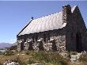
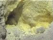
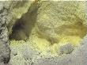

We spent 18 days in New Zealand in early 2001, and the following pages all tell of our trip. As a brief overview, we spent time in Auckland, Houhoura Harbour, Taupo, Wellington, Franz Josef, Queenstown, Christchurch, Nelson, Rotorua and back into Auckland.
It was a fantastic trip, and we're making plans to return for a longer time.
Feel free to browse through the sections of our trip, they are written in chronological order, but it shouldn't make much difference if you just read the sections which are about places you're interested in. And, if you find something that's not correct, or that you agree or disagree with, then why not leave us a message in the discussion board.
Contents

 
